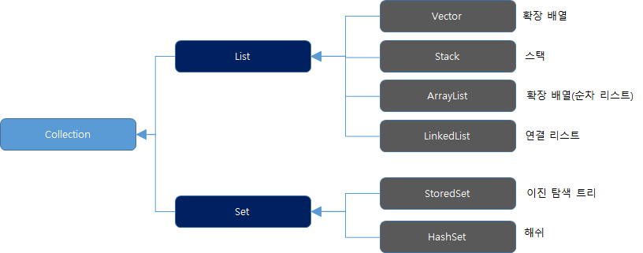
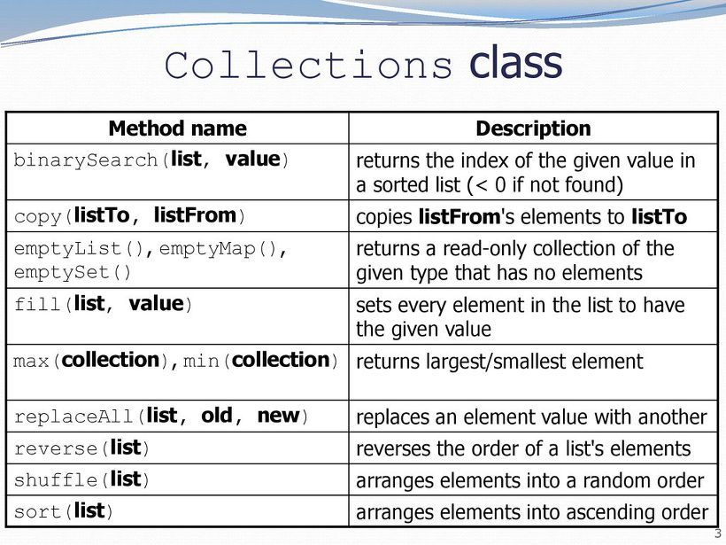

정적 메서드와 정적 필드로 이루어진 클래스들
객체지향의 관점에서는 적합하지 않지만 단순히 정적 메서드와 정적 필드로만 이루어진 클래스들은 나름의 쓰임새가 있다. 아래는 이 목적에 부합하는 대표적인 클래스들이다.
java.lang.Math
java.util.Arrays
java.util.Collections
Collections 클래스

Collection 인터페이스와 구현 클래스 계층 구조
대표적으로 Collections 클래스를 살펴보자면 해당 클래스는 Collection 인터페이스를 상속받은 객체를 생성해주는 정적메서드(혹은 팩터리)로 구성된 유틸리티 클래스이다. java 1.2 이후 추가되었으며 Collecion 처리에 관한 여러가지 메소드가 존재한다. 예를 들어 sort, reverse, max, min 등이 있다. 또한 파라미터로 사용되는 클래스 객체에 대해 기본적으로 Null을 허용하지 않고, 지정된 클래스가 유지해야 하는 원칙에 위배되는 행위(정렬 규칙 다른경우 등)에는 예외를 발생하는 특징이 있다.

Collections 클래스
추가적으로 이런 Collections 처럼 특정 인터페이스를 구현하는 객체를 생성해주는 정적 메서드(혹은 팩터리) 를 인터페이스에 자바 8부터 넣을 수 있게 되었다.
final 클래스
정적 메서드와 필드로만 이루어진 클래스는 final 클래스와 관련한 메서드를 모아놓을때도 사용한다. final 클래스는 확장할 수 없는 클래스이며 따라서 상속받은 하위 클래스에서 메서드를 넣는 것은 불가능 하기 때문이다.
인스턴스 생성을 목적으로 설계되지 않은 클래스들
여기서 한가지 알아야 할 것은 생성자를 명시하지 않으면 컴파일러는 자동으로 기본생성자를 만든다는 것이다. 이는 인스턴스 생성을 목적으로 하는 클래스들에게 제공되는 편리한 기능일 것이다. 하지만 위 같은 정적 멤버로만 이루어진 클래스에게는 명확성을 해치는 결과를 가져온다. 이 생성자가 자동생성 된 것인지, 의도된 목적을 가지고 만들어진 것인지 사용자는 알지 못하기 때문이다.
인스턴스화를 막는 방법, private 생성자
추상클래스로 만드는 것으로는 인스턴스화를 막지 못한다. 하위 클래스를 만들어 인스턴스화 가능하며 더군다나, 추상클래스는 상속을 통한 재사용과 확장을 지원하므로 사용자에게 상속해서 사용하라는 오해를 심어줄 수 있다. 때문에 컴파일러가 기본 생성자를 막는 경우는 명시된 생성자가 없을때 뿐이므로 private 생성자를 추가하여 클래스의 인스턴스화를 막을 수 있다.
1 | class UtilityClass{ |
이는 클래스의 인스턴스화를 막는 확실한 방법이다. 하지만 직관적이지 못해 적절한 주석이 필요하다. 또한 이 방식은 상속을 불가능하게 하는 효과도 있다. 하위클래스에서 상위클래스의 생성자를 접근할 길이 없기 때문이다.